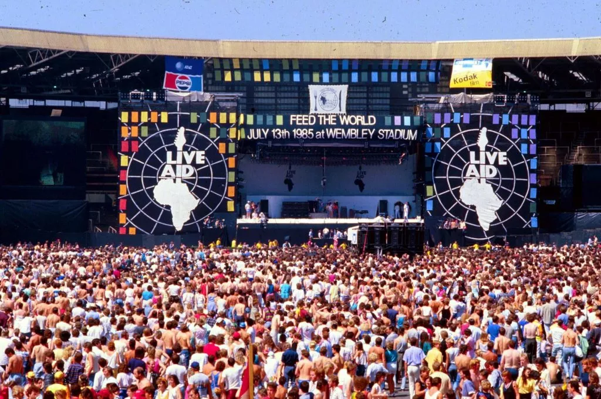

O ROCK (NÃO) ESTÁ MORTO
Quer acompanhar mais do site direto de casa?
Assine nossa revista e saiba tudo do mundo do RockAndRoll
Aqui vai (mais) uma lista
dos artistas mais importantes para HISTÓRIA do rock:
A "Rainha" Freddie Mercury da banda Queen
Os mais famosos da atualidade AC/DC
A banda mais "Sexo Drogas e RockAndRoll" Guns n' Roses
O cantor dos maiores figurinos Elton Jhon
"O Brasil não estava pronto para eles" Mamonas Assassinas
'Os filhos da recolução' no Brasil Legião Urbana
Rainha da guitarra e do "Amor ao Rainha Joan Jett
Rainha da Rock Brasileiro Rita Lee
O rock ainda não morreu.
Na era da tecnologia muita coisa se perdeu com o tempo, mas a música não muda jamais.
Se você quiser ouvir os artistas citados, apenas pesquise seus nomes.
E como bons ouvintes de música não podemos perder a essência do Rock, do Blues, da música negra, etc
Entre no Youtube e veja/reveja os grandes artistas que fizeram história
E jamais, façam com que o show não possa continuar.

Fontes usadas (que não foram listadas):
Feito por: 'Yuri Kreuzberg Marcelino'
para o IFPR